| GO:0048010 | vascular endothelial growth factor receptor signaling pathway | 12 | 13.3 | 3.1 | 8.2 | 0.253 | 0.002000 |  |  |
| GO:0070102 | interleukin-6-mediated signaling pathway | 12 | 3.6 | 13.3 | 8.4 | 0.081 | 0.066900 | |  |
| GO:0001569 | branching involved in blood vessel morphogenesis | 24 | 12.4 | 4.9 | 8.7 | 0.250 | 0.006990 | |  |
| GO:0002040 | sprouting angiogenesis | 23 | 15.1 | 2.7 | 8.9 | 0.280 | 0.000999 |  | |
| GO:0030949 | positive regulation of vascular endothelial growth factor receptor signaling pathway | 10 | 16.4 | 3.6 | 10.0 | 0.299 | 0.003000 |  |  |
| GO:0019221 | cytokine-mediated signaling pathway | 66 | 22.7 | 2.7 | 12.7 | 0.407 | 0.000999 |  |  |
| GO:0042832 | defense response to protozoan | 20 | 4.4 | 25.8 | 15.1 | 0.104 | 0.207000 | | |
| GO:0045665 | negative regulation of neuron differentiation | 43 | 5.8 | 28.0 | 16.9 | 0.158 | 0.239000 | | 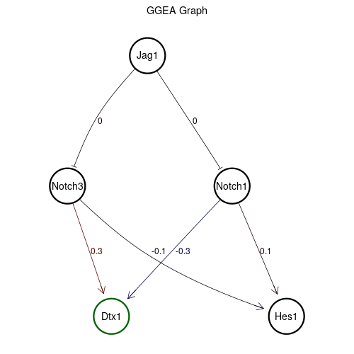 |
| GO:0043552 | positive regulation of phosphatidylinositol 3-kinase activity | 18 | 13.8 | 20.9 | 17.3 | 0.265 | 0.129000 |  |  |
| GO:0032874 | positive regulation of stress-activated MAPK cascade | 19 | 17.3 | 17.3 | 17.3 | 0.316 | 0.104000 |  | |
| GO:0043066 | negative regulation of apoptotic process | 364 | 27.1 | 9.3 | 18.2 | 0.451 | 0.031000 | | |
| GO:0007595 | lactation | 22 | 30.7 | 6.2 | 18.4 | 0.473 | 0.012000 |  |  |
| GO:0030097 | hemopoiesis | 62 | 25.8 | 14.2 | 20.0 | 0.439 | 0.069900 |  |  |
| GO:0030968 | endoplasmic reticulum unfolded protein response | 39 | 8.4 | 32.0 | 20.2 | 0.195 | 0.293000 |  |  |
| GO:0045454 | cell redox homeostasis | 55 | 7.6 | 33.3 | 20.4 | 0.184 | 0.318000 | | |
| GO:0060548 | negative regulation of cell death | 61 | 8.9 | 32.4 | 20.7 | 0.202 | 0.295000 | 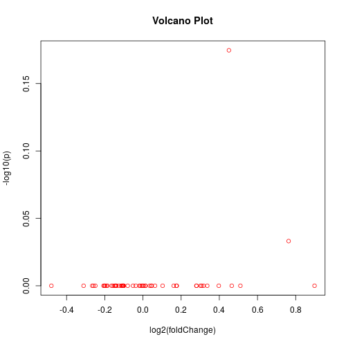 | 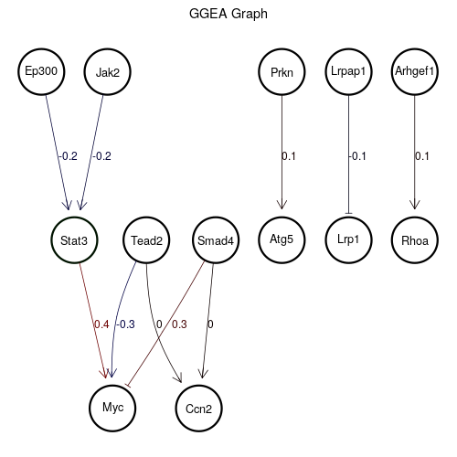 |
| GO:0070555 | response to interleukin-1 | 19 | 16.9 | 24.9 | 20.9 | 0.309 | 0.197000 |  |  |
| GO:0071480 | cellular response to gamma radiation | 27 | 34.2 | 8.9 | 21.6 | 0.519 | 0.028000 |  |  |
| GO:0051897 | positive regulation of protein kinase B signaling | 65 | 37.8 | 5.3 | 21.6 | 0.542 | 0.008990 | 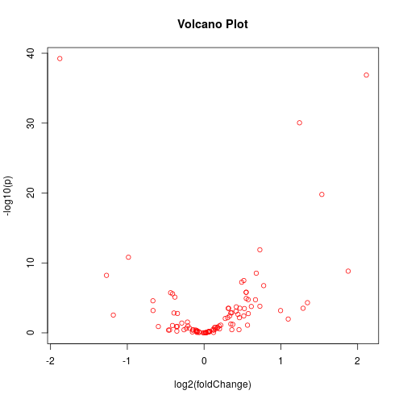 | |
| GO:0032755 | positive regulation of interleukin-6 production | 44 | 33.8 | 9.8 | 21.8 | 0.510 | 0.040000 | 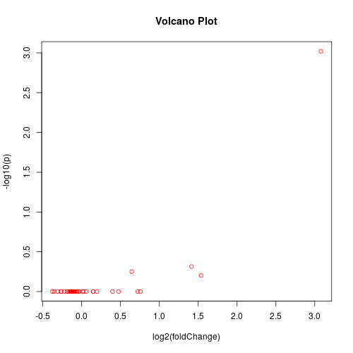 | |
| GO:0010942 | positive regulation of cell death | 43 | 14.7 | 30.2 | 22.4 | 0.277 | 0.274000 | |  |
| GO:0050821 | protein stabilization | 151 | 1.8 | 44.0 | 22.9 | 0.001 | 0.435000 |  | |
| GO:0042102 | positive regulation of T cell proliferation | 43 | 25.3 | 21.3 | 23.3 | 0.438 | 0.139000 |  | |
| GO:0048013 | ephrin receptor signaling pathway | 17 | 24.0 | 23.1 | 23.6 | 0.423 | 0.174000 |  |  |
| GO:0060396 | growth hormone receptor signaling pathway | 7 | 28.0 | 20.4 | 24.2 | 0.457 | 0.127000 |  |  |
| GO:0071310 | cellular response to organic substance | 29 | 30.2 | 18.7 | 24.4 | 0.472 | 0.113000 |  |  |
| GO:0035556 | intracellular signal transduction | 280 | 40.9 | 10.2 | 25.6 | 0.559 | 0.042000 | |  |
| GO:0006351 | transcription, DNA-templated | 89 | 12.9 | 40.9 | 26.9 | 0.251 | 0.391000 |  |  |
| GO:0046902 | regulation of mitochondrial membrane permeability | 9 | 9.3 | 46.2 | 27.8 | 0.211 | 0.445000 |  | |
| GO:0001570 | vasculogenesis | 41 | 42.7 | 13.8 | 28.2 | 0.577 | 0.068900 |  | |
| GO:0032496 | response to lipopolysaccharide | 84 | 17.8 | 39.1 | 28.4 | 0.324 | 0.386000 | | |
| GO:0001666 | response to hypoxia | 82 | 56.4 | 2.7 | 29.6 | 0.683 | 0.000999 |  | |
| GO:0006974 | cellular response to DNA damage stimulus | 448 | 9.8 | 49.8 | 29.8 | 0.220 | 0.497000 |  |  |
| GO:0014068 | positive regulation of phosphatidylinositol 3-kinase signaling | 51 | 57.3 | 2.7 | 30.0 | 0.684 | 0.000999 |  | |
| GO:0010595 | positive regulation of endothelial cell migration | 32 | 45.3 | 15.1 | 30.2 | 0.592 | 0.072900 | |  |
| GO:0045740 | positive regulation of DNA replication | 24 | 21.3 | 41.3 | 31.3 | 0.391 | 0.393000 |  | |
| GO:0010332 | response to gamma radiation | 23 | 10.2 | 52.9 | 31.6 | 0.221 | 0.528000 |  | 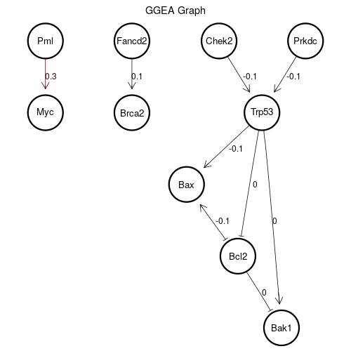 |
| GO:0043588 | skin development | 26 | 14.2 | 49.3 | 31.8 | 0.268 | 0.470000 | |  |
| GO:0000079 | regulation of cyclin-dependent protein serine/threonine kinase activity | 31 | 29.8 | 33.8 | 31.8 | 0.469 | 0.319000 |  |  |
| GO:0006955 | immune response | 113 | 38.7 | 25.3 | 32.0 | 0.544 | 0.205000 | |  |
| GO:0031663 | lipopolysaccharide-mediated signaling pathway | 27 | 42.2 | 21.8 | 32.0 | 0.575 | 0.147000 |  |  |
| GO:0046330 | positive regulation of JNK cascade | 58 | 51.6 | 12.4 | 32.0 | 0.627 | 0.057900 |  |  |
| GO:0007507 | heart development | 153 | 58.2 | 5.8 | 32.0 | 0.693 | 0.011000 |  |  |
| GO:0034599 | cellular response to oxidative stress | 59 | 4.0 | 61.8 | 32.9 | 0.087 | 0.625000 |  | |
| GO:0045737 | positive regulation of cyclin-dependent protein serine/threonine kinase activity | 21 | 36.9 | 29.3 | 33.1 | 0.537 | 0.255000 |  | |
| GO:0007169 | transmembrane receptor protein tyrosine kinase signaling pathway | 41 | 55.1 | 11.1 | 33.1 | 0.677 | 0.047000 | | |
| GO:0042127 | regulation of cell proliferation | 141 | 20.0 | 46.7 | 33.3 | 0.370 | 0.448000 |  | 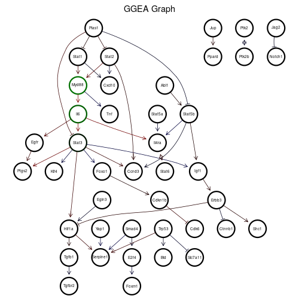 |
| GO:0006366 | transcription by RNA polymerase II | 103 | 40.4 | 26.7 | 33.6 | 0.552 | 0.219000 |  |  |
| GO:0016192 | vesicle-mediated transport | 205 | 1.8 | 67.6 | 34.7 | 0.001 | 0.743000 |  |  |
| GO:0045785 | positive regulation of cell adhesion | 46 | 47.1 | 22.2 | 34.7 | 0.602 | 0.157000 | 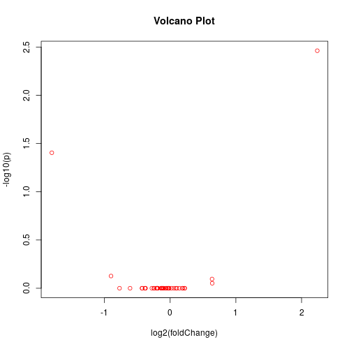 | 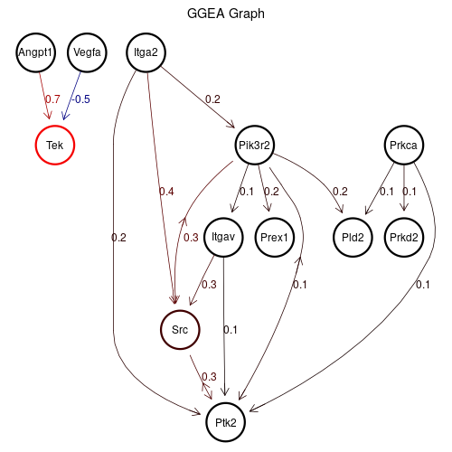 |
| GO:0035458 | cellular response to interferon-beta | 23 | 27.6 | 42.7 | 35.1 | 0.453 | 0.409000 | |  |
| GO:0038083 | peptidyl-tyrosine autophosphorylation | 24 | 32.4 | 37.8 | 35.1 | 0.508 | 0.373000 | 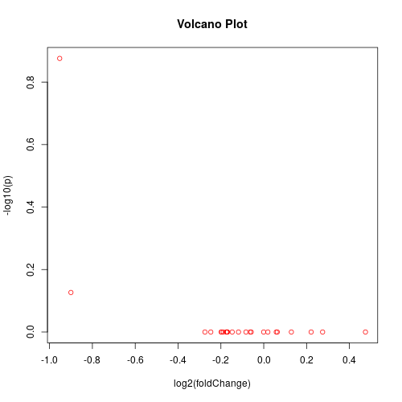 |  |
| GO:0000082 | G1/S transition of mitotic cell cycle | 53 | 46.2 | 24.4 | 35.3 | 0.594 | 0.196000 |  | 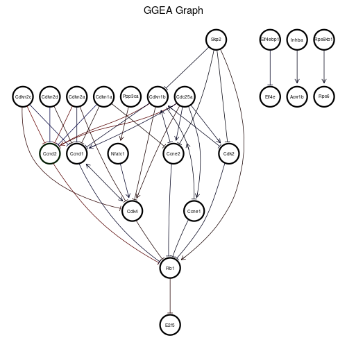 |
| GO:0008203 | cholesterol metabolic process | 74 | 29.3 | 41.8 | 35.6 | 0.467 | 0.399000 | |  |
| GO:0035924 | cellular response to vascular endothelial growth factor stimulus | 23 | 52.4 | 19.1 | 35.8 | 0.629 | 0.116000 | 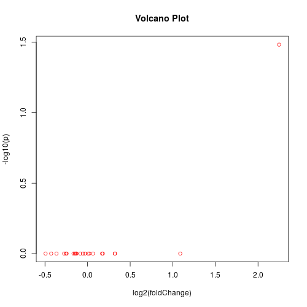 |  |
| GO:0033138 | positive regulation of peptidyl-serine phosphorylation | 66 | 53.3 | 18.2 | 35.8 | 0.649 | 0.111000 | |  |
| GO:0007259 | JAK-STAT cascade | 19 | 24.9 | 47.1 | 36.0 | 0.424 | 0.453000 |  | |
| GO:0007189 | adenylate cyclase-activating G protein-coupled receptor signaling pathway | 34 | 23.1 | 51.1 | 37.1 | 0.409 | 0.509000 | | |
| GO:0070374 | positive regulation of ERK1 and ERK2 cascade | 129 | 71.6 | 2.7 | 37.1 | 0.777 | 0.000999 |  |  |
| GO:0042531 | positive regulation of tyrosine phosphorylation of STAT protein | 29 | 54.7 | 19.6 | 37.1 | 0.670 | 0.121000 |  |  |
| GO:0032091 | negative regulation of protein binding | 59 | 7.1 | 68.0 | 37.6 | 0.172 | 0.744000 |  |  |
| GO:0045766 | positive regulation of angiogenesis | 98 | 68.0 | 7.6 | 37.8 | 0.765 | 0.015000 | | |
| GO:0030154 | cell differentiation | 454 | 71.1 | 4.4 | 37.8 | 0.771 | 0.005990 |  |  |
| GO:0051726 | regulation of cell cycle | 108 | 24.9 | 51.6 | 38.2 | 0.424 | 0.510000 |  | |
| GO:0050729 | positive regulation of inflammatory response | 54 | 64.0 | 12.9 | 38.4 | 0.747 | 0.061900 |  |  |
| GO:0045892 | negative regulation of transcription, DNA-templated | 389 | 19.6 | 57.8 | 38.7 | 0.358 | 0.563000 |  |  |
| GO:0051607 | defense response to virus | 125 | 40.4 | 37.3 | 38.9 | 0.552 | 0.368000 | 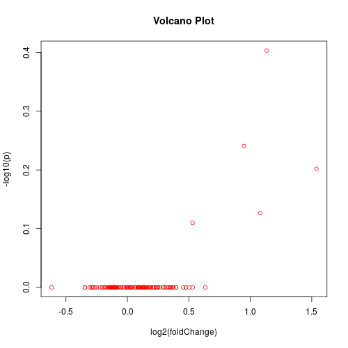 |  |
| GO:0014911 | positive regulation of smooth muscle cell migration | 30 | 45.3 | 32.9 | 39.1 | 0.592 | 0.303000 |  |  |
| GO:0018108 | peptidyl-tyrosine phosphorylation | 50 | 61.3 | 17.8 | 39.6 | 0.723 | 0.106000 | 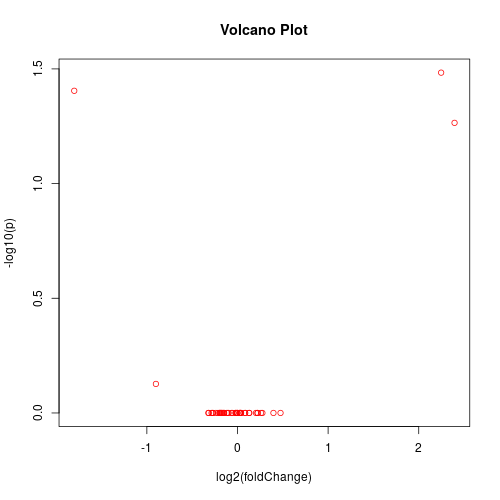 | |
| GO:0031669 | cellular response to nutrient levels | 7 | 18.2 | 61.3 | 39.8 | 0.334 | 0.618000 | |  |
| GO:0006413 | translational initiation | 49 | 1.8 | 77.8 | 39.8 | 0.001 | 0.848000 | |  |
| GO:0006952 | defense response | 42 | 39.1 | 40.4 | 39.8 | 0.548 | 0.390000 |  | 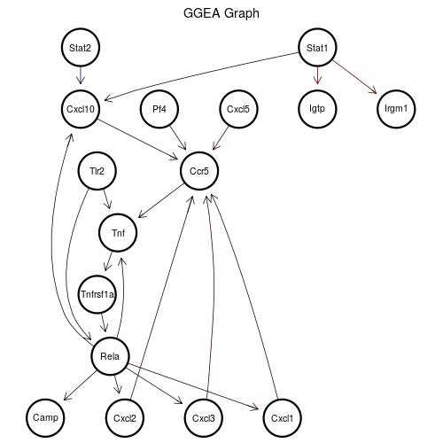 |
| GO:0048514 | blood vessel morphogenesis | 25 | 76.0 | 4.0 | 40.0 | 0.803 | 0.004000 | | 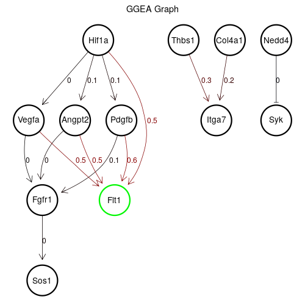 |
| GO:0010508 | positive regulation of autophagy | 45 | 18.7 | 63.1 | 40.9 | 0.344 | 0.656000 | | 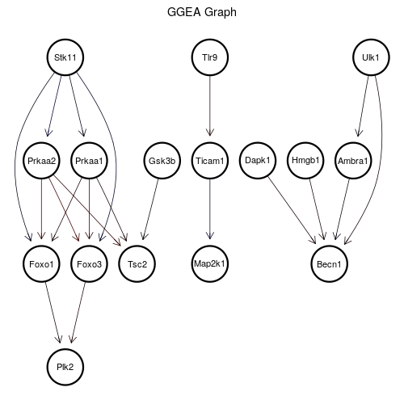 |
| GO:0045669 | positive regulation of osteoblast differentiation | 42 | 61.8 | 20.0 | 40.9 | 0.724 | 0.123000 | |  |
| GO:0060337 | type I interferon signaling pathway | 12 | 43.6 | 38.7 | 41.1 | 0.582 | 0.385000 |  | |
| GO:0009612 | response to mechanical stimulus | 16 | 36.0 | 47.6 | 41.8 | 0.536 | 0.457000 |  | |
| GO:0006954 | inflammatory response | 203 | 76.9 | 7.1 | 42.0 | 0.805 | 0.013000 |  |  |
| GO:0008202 | steroid metabolic process | 70 | 41.8 | 43.1 | 42.4 | 0.569 | 0.415000 | |  |
| GO:0001525 | angiogenesis | 155 | 82.2 | 2.7 | 42.4 | 0.841 | 0.000999 |  | 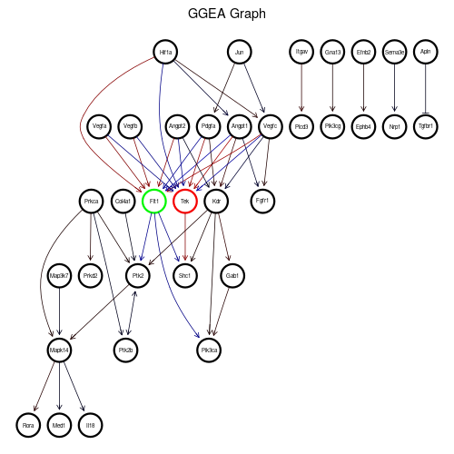 |
| GO:1901224 | positive regulation of NIK/NF-kappaB signaling | 51 | 69.3 | 15.6 | 42.4 | 0.768 | 0.076900 | 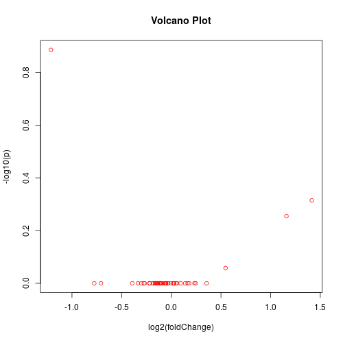 |  |
| GO:0006417 | regulation of translation | 119 | 10.7 | 74.7 | 42.7 | 0.223 | 0.815000 |  |  |
| GO:0006631 | fatty acid metabolic process | 120 | 1.8 | 84.0 | 42.9 | 0.001 | 0.891000 |  | |
| GO:0008284 | positive regulation of cell proliferation | 293 | 77.8 | 8.0 | 42.9 | 0.816 | 0.022000 | 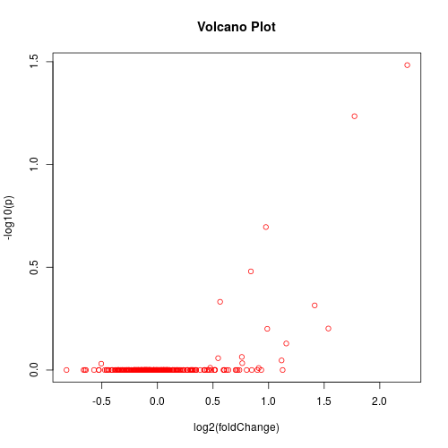 | 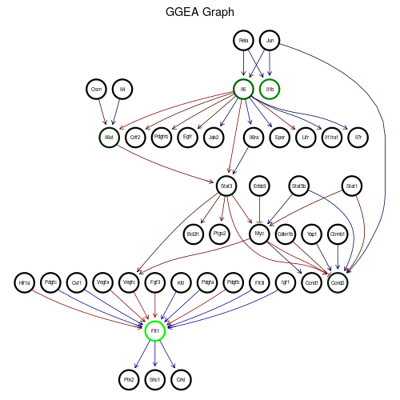 |
| GO:0010507 | negative regulation of autophagy | 34 | 8.0 | 79.6 | 43.8 | 0.187 | 0.859000 |  | 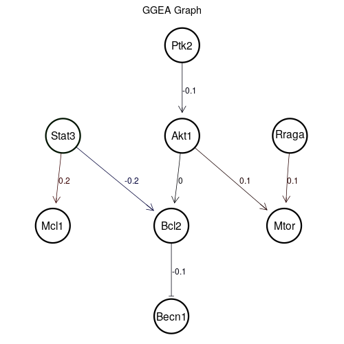 |
| GO:0043406 | positive regulation of MAP kinase activity | 37 | 76.0 | 11.6 | 43.8 | 0.803 | 0.051900 |  |  |
| GO:0045786 | negative regulation of cell cycle | 29 | 4.9 | 83.6 | 44.2 | 0.118 | 0.888000 | | 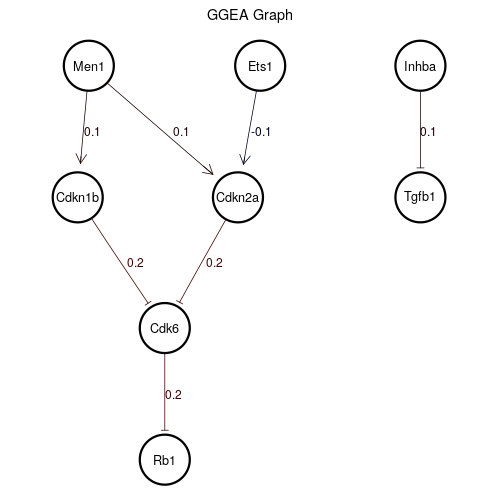 |
| GO:0006006 | glucose metabolic process | 36 | 43.1 | 45.3 | 44.2 | 0.580 | 0.443000 | |  |
| GO:0016525 | negative regulation of angiogenesis | 57 | 72.4 | 16.0 | 44.2 | 0.787 | 0.082900 | | |
| GO:0051301 | cell division | 343 | 32.0 | 56.9 | 44.4 | 0.500 | 0.554000 |  |  |
| GO:0010628 | positive regulation of gene expression | 295 | 44.0 | 44.9 | 44.4 | 0.585 | 0.440000 | |  |
| GO:0090090 | negative regulation of canonical Wnt signaling pathway | 73 | 19.1 | 70.2 | 44.7 | 0.346 | 0.762000 |  |  |
| GO:0032922 | circadian regulation of gene expression | 54 | 5.3 | 84.9 | 45.1 | 0.127 | 0.898000 | 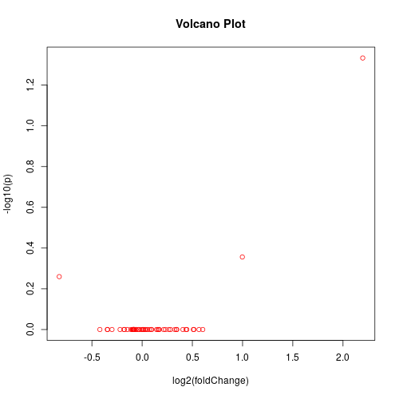 | |
| GO:1901215 | negative regulation of neuron death | 44 | 62.2 | 28.4 | 45.3 | 0.727 | 0.244000 |  |  |
| GO:0006629 | lipid metabolic process | 348 | 15.6 | 76.9 | 46.2 | 0.283 | 0.845000 |  |  |
| GO:0008630 | intrinsic apoptotic signaling pathway in response to DNA damage | 45 | 36.0 | 56.4 | 46.2 | 0.536 | 0.548000 | | |
| GO:0045893 | positive regulation of transcription, DNA-templated | 427 | 62.7 | 29.8 | 46.2 | 0.731 | 0.264000 |  |  |
| GO:0001934 | positive regulation of protein phosphorylation | 149 | 85.8 | 7.1 | 46.4 | 0.866 | 0.013000 |  |  |
| GO:0032757 | positive regulation of interleukin-8 production | 22 | 65.8 | 27.6 | 46.7 | 0.752 | 0.236000 | | |
| GO:0006633 | fatty acid biosynthetic process | 48 | 6.2 | 88.4 | 47.3 | 0.163 | 0.914000 |  | 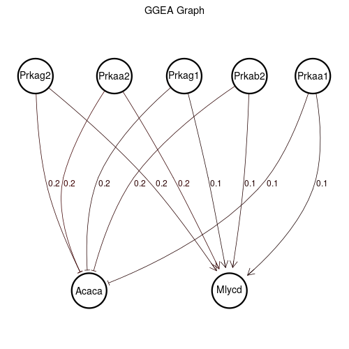 |